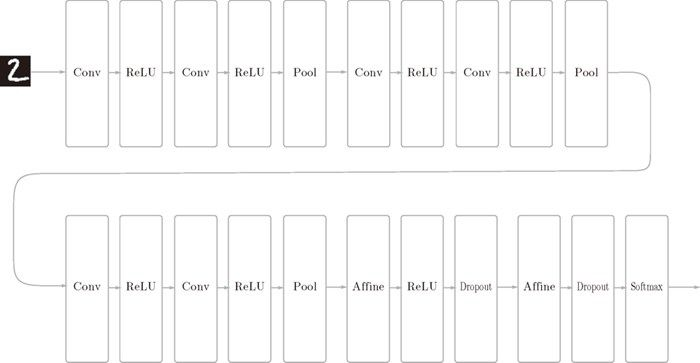
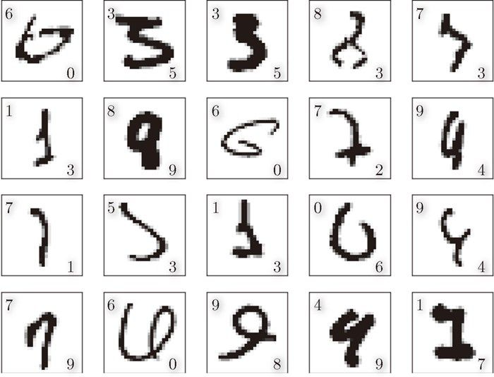
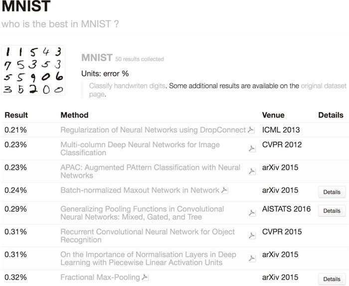
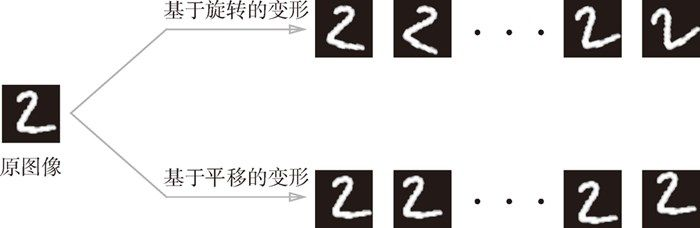
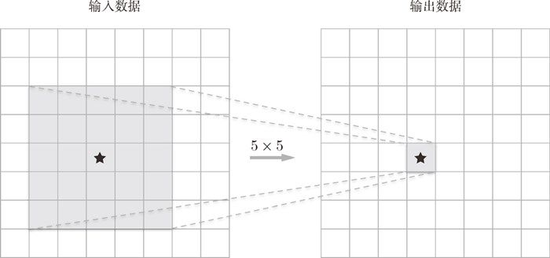
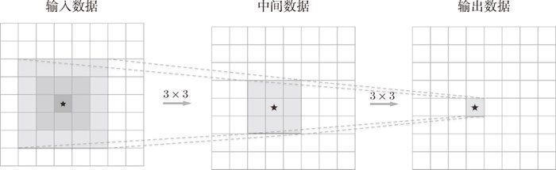

实现图 8-1 的网络的源代码在
实现图 8-1 的网络的源代码在 ch08/deep_convnet.py 中，训练用的代码在 ch08/train_deepnet.py 中。虽然使用这些代码可以重现这里进行的学习，不过深度网络的学习需要花费较多的时间（大概要半天以上）。本书以 ch08/deep_conv_net_params.pkl 的形式给出了学习完的权重参数。刚才的 deep_convnet.py 备有读入学习完的参数的功能，请根据需要进行使用。
关于神经网络，我们已经学了很多东西，比如构成神经网络的各种层、学习时的有效技巧、对图像特别有效的 CNN、参数的最优化方法等，这些都是深度学习中的重要技术。本节我们将这些已经学过的技术汇总起来，创建一个深度网络，挑战 MNIST 数据集的手写数字识别。
话不多说，这里我们来创建一个如图 8-1 所示的网络结构的 CNN（一个比之前的网络都深的网络）。这个网络参考了下一节要介绍的 VGG。
如图 8-1 所示，这个网络的层比之前实现的网络都更深。这里使用的卷积层全都是 3 × 3 的小型滤波器，特点是随着层的加深，通道数变大（卷积层的通道数从前面的层开始按顺序以 16、16、32、32、64、64 的方式增加）。此外，如图 8-1 所示，插入了池化层，以逐渐减小中间数据的空间大小；并且，后面的全连接层中使用了 Dropout 层。

图 8-1 进行手写数字识别的深度 CNN
这个网络使用 He 初始值作为权重的初始值，使用 Adam 更新权重参数。把上述内容总结起来，这个网络有如下特点。
- 基于 3×3 的小型滤波器的卷积层。
- 激活函数是 ReLU。
- 全连接层的后面使用 Dropout 层。
- 基于 Adam 的最优化。
- 使用 He 初始值作为权重初始值。
从这些特征中可以看出，图 8-1 的网络中使用了多个之前介绍的神经网络技术。现在，我们使用这个网络进行学习。先说一下结论，这个网络的识别精度为 99.38% 1，可以说是非常优秀的性能了！
1最终的识别精度有少许偏差，不过在这个网络中，识别精度大体上都会超过 99%。
ch08/deep_convnet.py中，训练用的代码在ch08/train_deepnet.py中。虽然使用这些代码可以重现这里进行的学习，不过深度网络的学习需要花费较多的时间（大概要半天以上）。本书以ch08/deep_conv_net_params.pkl的形式给出了学习完的权重参数。刚才的deep_convnet.py备有读入学习完的参数的功能，请根据需要进行使用。
图 8-1 的网络的错误识别率只有 0.62%。这里我们实际看一下在什么样的图像上发生了识别错误。图 8-2 中显示了识别错误的例子。

图 8-2 识别错误的图像的例子：各个图像的左上角显示了正确解标签，右下角显示了本网络的推理结果
观察图 8-2 可知，这些图像对于我们人类而言也很难判断。实际上，这里面有几个图像很难判断是哪个数字，即使是我们人类，也同样会犯“识别错误”。比如，左上角的图像（正确解是“6”）看上去像“0”，它旁边的图像（正确解是“3”）看上去像“5”。整体上，“1”和“7”、“0”和“6”、“3”和“5”的组合比较容易混淆。通过这些例子，相信大家可以理解为何会发生识别错误了吧。
这次的深度 CNN 尽管识别精度很高，但是对于某些图像，也犯了和人类同样的“识别错误”。从这一点上，我们也可以感受到深度 CNN 中蕴藏着巨大的可能性。
在一个标题为“What is the class of this image ?”的网站 [32] 上，以排行榜的形式刊登了目前为止通过论文等渠道发表的针对各种数据集的方法的识别精度（图 8-3）。

图 8-3 针对 MNIST 数据集的各种方法的排行（引自文献 [32]：2016 年 6 月）
观察图 8-3 的排行结果，可以发现“Neural Networks”“Deep”“Convolutional”等关键词特别显眼。实际上，排行榜上的前几名大都是基于 CNN 的方法。顺便说一下，截止到 2016 年 6 月，对 MNIST 数据集的最高识别精度是 99.79%（错误识别率为 0.21%），该方法也是以 CNN 为基础的 [33]。不过，它用的 CNN 并不是特别深层的网络（卷积层为 2 层、全连接层为 2 层的网络）。
参考刚才排行榜中前几名的方法，可以发现进一步提高识别精度的技术和线索。比如，集成学习、学习率衰减、Data Augmentation（数据扩充）等都有助于提高识别精度。尤其是 Data Augmentation，虽然方法很简单，但在提高识别精度上效果显著。
Data Augmentation 基于算法“人为地”扩充输入图像（训练图像）。具体地说，如图 8-4 所示，对于输入图像，通过施加旋转、垂直或水平方向上的移动等微小变化，增加图像的数量。这在数据集的图像数量有限时尤其有效。

图 8-4 Data Augmentation 的例子
除了如图 8-4 所示的变形之外，Data Augmentation 还可以通过其他各种方法扩充图像，比如裁剪图像的“crop 处理”、将图像左右翻转的“flip 处理”2等。对于一般的图像，施加亮度等外观上的变化、放大缩小等尺度上的变化也是有效的。不管怎样，通过 Data Augmentation 巧妙地增加训练图像，就可以提高深度学习的识别精度。虽然这个看上去只是一个简单的技巧，不过经常会有很好的效果。这里，我们不进行 Data Augmentation 的实现，不过这个技巧的实现比较简单，有兴趣的读者请自己试一下。
2flip 处理只在不需要考虑图像对称性的情况下有效。
关于加深层的重要性，现状是理论研究还不够透彻。尽管目前相关理论还比较贫乏，但是有几点可以从过往的研究和实验中得以解释（虽然有一些直观）。本节就加深层的重要性，给出一些增补性的数据和说明。
首先，从以 ILSVRC 为代表的大规模图像识别的比赛结果中可以看出加深层的重要性（详细内容请参考下一节）。这种比赛的结果显示，最近前几名的方法多是基于深度学习的，并且有逐渐加深网络的层的趋势。也就是说，可以看到层越深，识别性能也越高。
下面我们说一下加深层的好处。其中一个好处就是可以减少网络的参数数量。说得详细一点，就是与没有加深层的网络相比，加深了层的网络可以用更少的参数达到同等水平（或者更强）的表现力。这一点结合卷积运算中的滤波器大小来思考就好理解了。比如，图 8-5 展示了由 5 × 5 的滤波器构成的卷积层。

图 8-5 5×5 的卷积运算的例子
这里希望大家考虑一下输出数据的各个节点是从输入数据的哪个区域计算出来的。显然，在图 8-5 的例子中，每个输出节点都是从输入数据的某个 5 × 5 的区域算出来的。接下来我们思考一下图 8-6 中重复两次 3 × 3 的卷积运算的情形。此时，每个输出节点将由中间数据的某个 3 × 3 的区域计算出来。那么，中间数据的 3 × 3 的区域又是由前一个输入数据的哪个区域计算出来的呢？仔细观察图 8-6，可知它对应一个 5 × 5 的区域。也就是说，图 8-6 的输出数据是“观察”了输入数据的某个 5 × 5 的区域后计算出来的。

图 8-6 重复两次 3×3 的卷积层的例子
一次 5 × 5 的卷积运算的区域可以由两次 3 × 3 的卷积运算抵充。并且，相对于前者的参数数量 25（5 × 5），后者一共是 18（2 × 3 × 3），通过叠加卷积层，参数数量减少了。而且，这个参数数量之差会随着层的加深而变大。比如，重复三次 3 × 3 的卷积运算时，参数的数量总共是 27。而为了用一次卷积运算“观察”与之相同的区域，需要一个 7 × 7 的滤波器，此时的参数数量是 49。
加深层的另一个好处就是使学习更加高效。与没有加深层的网络相比，通过加深层，可以减少学习数据，从而高效地进行学习。为了直观地理解这一点，大家可以回忆一下 7.6 节的内容。7.6 节中介绍了 CNN 的卷积层会分层次地提取信息。具体地说，在前面的卷积层中，神经元会对边缘等简单的形状有响应，随着层的加深，开始对纹理、物体部件等更加复杂的东西有响应。
我们先牢记这个网络的分层结构，然后考虑一下“狗”的识别问题。要用浅层网络解决这个问题的话，卷积层需要一下子理解很多“狗”的特征。“狗”有各种各样的种类，根据拍摄环境的不同，外观变化也很大。因此，要理解“狗”的特征，需要大量富有差异性的学习数据，而这会导致学习需要花费很多时间。
不过，通过加深网络，就可以分层次地分解需要学习的问题。因此，各层需要学习的问题就变成了更简单的问题。比如，最开始的层只要专注于学习边缘就好，这样一来，只需用较少的学习数据就可以高效地进行学习。这是为什么呢？因为和印有“狗”的照片相比，包含边缘的图像数量众多，并且边缘的模式比“狗”的模式结构更简单。
通过加深层，可以分层次地传递信息，这一点也很重要。比如，因为提取了边缘的层的下一层能够使用边缘的信息，所以应该能够高效地学习更加高级的模式。也就是说，通过加深层，可以将各层要学习的问题分解成容易解决的简单问题，从而可以进行高效的学习。
以上就是对加深层的重要性的増补性说明。不过，这里需要注意的是，近几年的深层化是由大数据、计算能力等即便加深层也能正确地进行学习的新技术和环境支撑的。